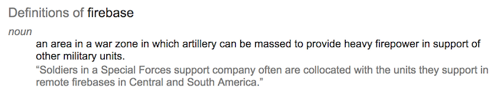
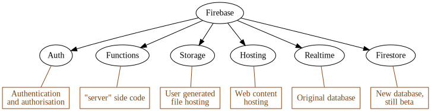
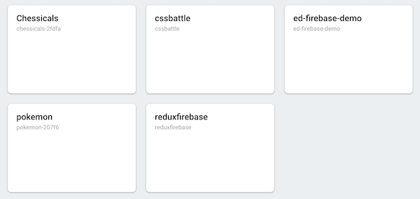
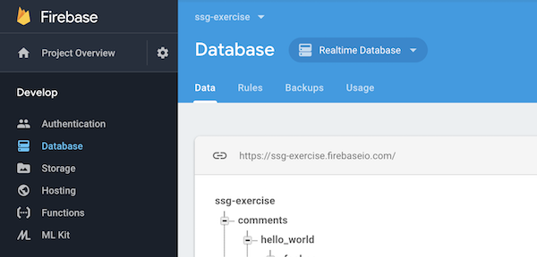
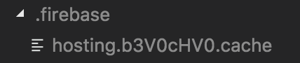

Firebase
Fight fire with fireSections in this chapter
Firebase
The platform
What is Firebase?

Firebase is a platform:

It is even a platform that supports platforms:
They even have their own conference!
The official homepage is...
...because they were bought by Google in 2014.
Workflow
The moving parts
There are a bunch of moving parts when working with Firebase:
- aThe online console
- bThe CLI
- c
firebase.json - d
.firebaserc - e
firebase-debug.log - f
.firebase
First off you will create Firebase projects at https://console.firebase.google.com.

Each of them might use any and all Firebase products.
And for each of them we can config the products in the console:

Locally on our machine we'll use the Firebase tools. We install them from npm...
npm install -g firebase-tools
...and can then use the firebase command:
firebase --help
In the source codes for projects intended to use Firebase projects, there is firebase.json. It holds config for various platform parts:
{
"database": ..., // database config
"functions": ..., // functions config
"hosting": ..., // hosting config
// ...and more...
}
We can create the file by hand, or generate it with the CLI. Same for updates.
Weirdly there's also another config file, .firebaserc. Commonly it looks something like this:
{
"projects": {
"default": "ssg-exercise" // <-- ssg-exercise is a project id
}
}
The job of .firebaserc is to connect the code to a specific firebase project instance.
So, should we version control .firebaserc along with firebase.json?
Sometimes, but probably not.
Here's a good writeup by a Firebase employee: https://stackoverflow.com/a/43528761
Next, firebase-debug.log.
This file will be generated by some CLI commands. As the name implies it is a simple log file, and should be gitignored.
Finally, .firebase. This is a folder with nonsense files that might turn up for some CLI commands.

It should be ignored and gitignored.
Hosting
host host
Time to take a look at some actual Firebase functionality!
We'll start by exploring the hosting product, which serves static files.
It can be configured in firebase.json thusly:
{
"hosting": {
"public": ..., // path to folder to publish
"redirects": [...], // array of redirect rules
"rewrites": [...], // array of rewrite rules
"headers": [...], // array of header rules
}
}
The public is the most important.
A redirect rule can look like this...
{
"source": "/foo", // path to catch
"destination": "/bar", // path to redirect to
"type": 301 // what code to send
}
...or like this, redirecting to an HTTP function:
{
"source": "/foo", // path to catch
"function": "myFunc", // name of HTTP function
"type": 301 // what code to send
}
We can also rewrite, which likely more appropriate when delegating to functions:
{
"source": "**",
"function": "app"
}
Here we route all traffic to a single function.
Functions?
Another Firebase product! More on that very soon!
To publish our static files, run:
firebase deploy --only hosting
This will push the contents of the public dir to
https://<YOUR-APP-NAME>.firebaseapp.com
You can also serve it locally:
firebase serve --only hosting
Find out more about hosting here:
Exercise - hosting, take I
Hosting the generated files
Time to finally start using Firebase!
And, of course, we do it by adding hosting to our blog.
More specifically, we want to host the generated files in /output!
Here're the steps you need to take:
- acreate firebase project
- bconnect google account
- cinit firebase locally
- dconnect firebase project
- econfigure hosting
- ftest locally
- gpublish files online
First we need to create a firebase project in the online console!
Navigate to https://console.firebase.google.com, log in with a google account, then create a project:

For now you don't need to do anything else.
Next you need to connect the google account to Firebase on your local machine by...
firebase login
...and then enter your credentials.
We can tell it worked by doing...
firebase list
...which will show the available Firebase projects for the current user (which should be the one you just made).
Now we need to init firebase locally in our code folder!
In the root folder of our project, execute...
firebase init
...and answer the questions.
This will generate a firebase.json.
We could also have written it by hand.
Now we have to connect the firebase project to the local files.
Execute...
firebase use
...and select your project in the list.
This will generate a .firebaserc linking in the project id.
Again, we could have created that file by hand too.
Time to configure the hosting!
Make sure firebase.json contains hosting configuration setting the public folder as /output.
As a bonus, add a 404.html file to /static and regenerate!
This is a magical file name that will be used by Firebase when the URL doesn't match anything.
Now everything is set up, and we can test it locally!
Run...
firebase serve --only hosting
...and open localhost:5000 in a browser!
Cooler still of course is to publish it online!
Execute...
firebase deploy --only hosting
...and visit https://<YOUR-APP-NAME>.firebaseapp.com in a browser!
Functions
Fun fun functions
Next product to explore: functions!
Hosting was a vehicle for files to be consumed by the client.
Functions is the opposite - it is a host for files to be consumed by the server.
In other words, functions are server-side code! It splits broadly into three categories:
- HTTP functions, which are called via requests
- database functions, triggered by DB events
- misc functions, triggered by other outside events
Main available firebase.json configs:
{
"functions": {
"predeploy": ..., // likely a build script
"source": ..., // defaults to './functions'
}
}
In the index.js file in the functions source folder, all named exports become registered functions:
exports.myFunc = ...
exports.myOtherFunc = ...
The functions are created by using the firebase-functions module from npm...
const functions = require("firebase-functions");
...which then has different create methods for different categories.
For example, a HTTP function that catches all requests is created like this:
exports.app = functions.https.onRequest(funcToRegister);
To publish the functions we have defined, run:
firebase deploy --only functions
To serve HTTP functions locally, run:
firebase serve --only functions
Normally we also want the static assets:
firebase serve --only functions,hosting
We'll come back to how to play with non-HTTP functions locally later!
Finally - the documentation for functions can be found here:
Demo - hosting, take II
Hosting the server
We'll now do a quick teacher demo of how to use HTTP functions to host our Express server!